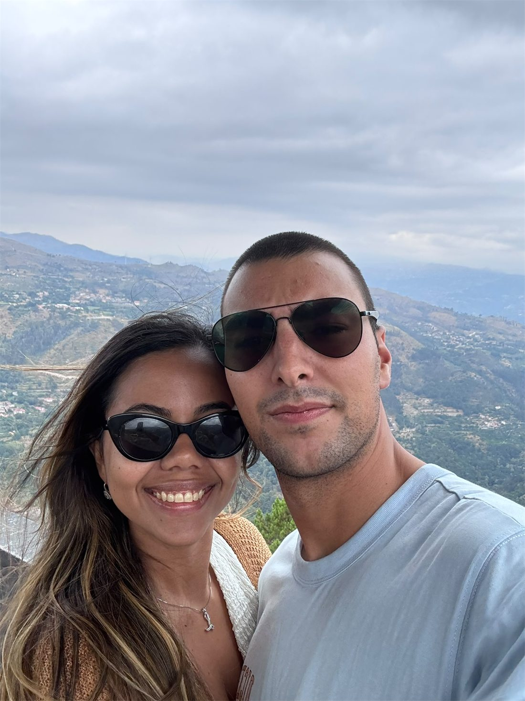
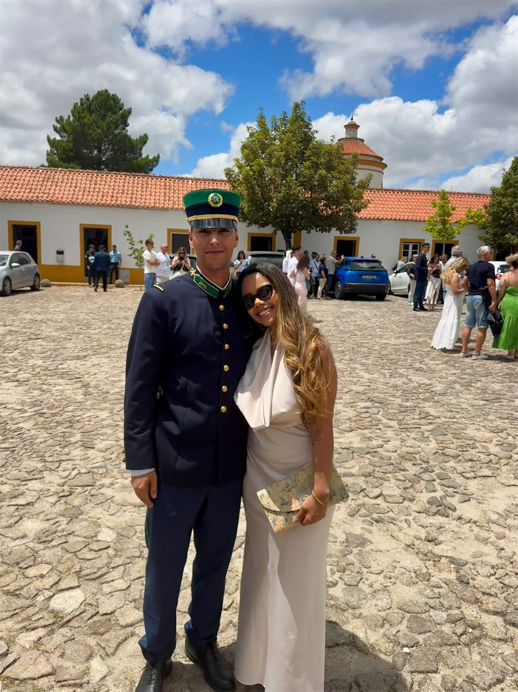
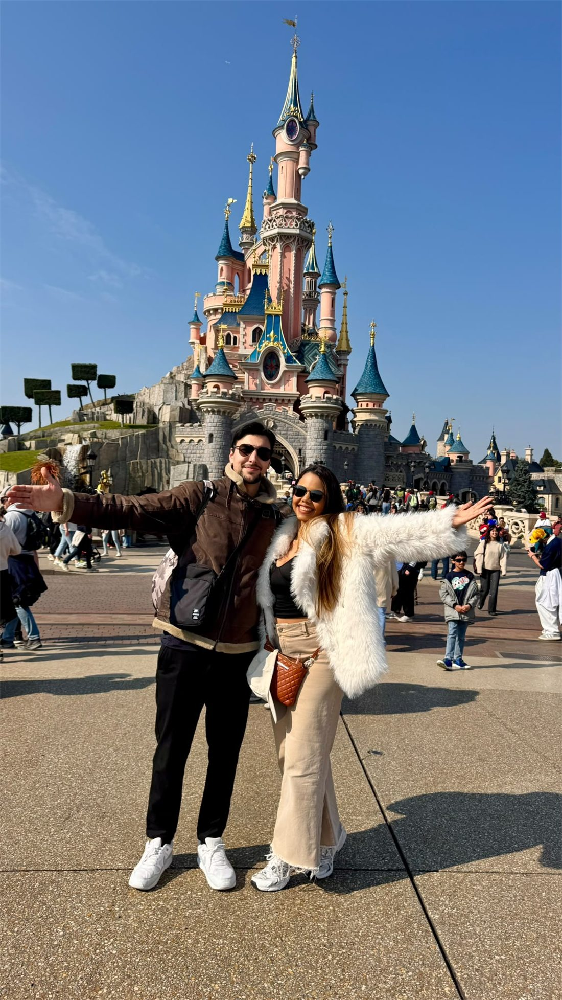
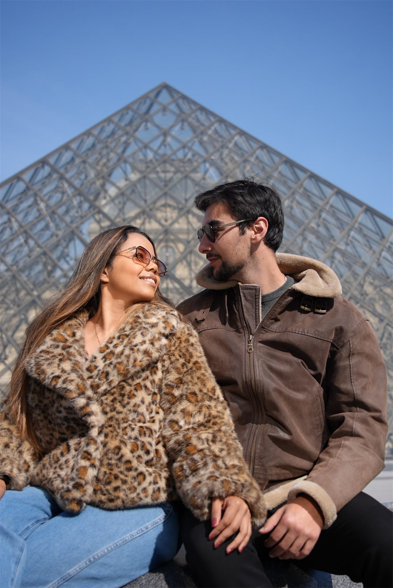

Lua de mel
R$ 1.000,00
Com alegria, convidamos você
1 Coríntios 13:4-7
“O amor é paciente, o amor é bondoso. Não inveja,
não se vangloria, não se orgulha. Tudo sofre, tudo crê,
tudo espera, tudo suporta.”
O convite
Se nos perguntassem onde começou a nossa história, a resposta seria simples: no céu da cidade de Neon.
Foi ali que nos conhecemos. E foi também ali que demos o nosso primeiro beijo, sob um céu maravilhoso, com o pôr do sol mais bonito do mundo a brilhar diante de nós. Naquele dia, talvez sem percebermos, o céu tornou-se a primeira testemunha da nossa história. E foi nesse momento que nasceu algo que nunca mais parou de crescer.
O grande dia
Chegue com 20 minutos de antecedência, para entrar antes da noiva.
Ver no mapaContagem regressiva
Retratos




Lista de presentes
A presença de vocês já é o nosso maior presente. Mas quem quiser nos ajudar a começar essa nova fase, pode escolher um item abaixo — o pagamento é direto por Pix, sem cadastro.
R$ 1.000,00
R$ 700,00
R$ 800,00
R$ 1.500,00
R$ 900,00
Você escolhe
Todo valor é bem-vindo — o Pix aceita qualquer quantia, os valores acima são só uma sugestão.